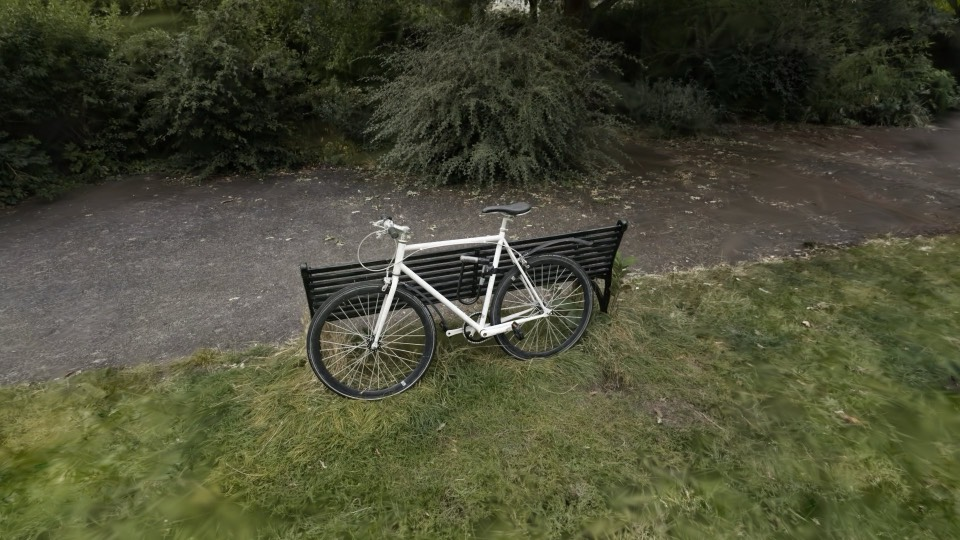

Radix is a Gaussian splat renderer for three.js's WebGPURenderer. This page compares it with SparkJS 2.3.1: the main differences in design, measurements on the same scenes, what porting Spark's examples showed, and the features of each side by side.
The measurements were taken on Oct 9, 2026 (Apple M3 Max, Chrome 154, 1920x1080, each renderer's defaults). All results, PlayCanvas included: Benchmarks.
Both draw many splat objects sorted together inside a three.js scene, from several viewpoints, with effects written as shader code. They differ in the GPU API they target, how shaders are written, how data is stored, and what happens while the set of splats changes.
On WebGPU the projection and a radix sort run as compute shaders before the draw, so every frame is drawn in the order for its own camera, with nothing read back. Over five scenes Radix on WebGPU is 1.37x as fast as Spark, and 1.8x at 10M splats. Apps can use compute as well: a generator can read arrays that a simulation writes on the GPU (section 02).
Spark's shaders are Dyno graphs: typed blocks of GLSL that Spark compiles for WebGL2. Radix's shaders are TSL, three.js's own shading language: JavaScript functions that compile to WGSL on WebGPU and to GLSL on WebGL2. Effects can use three's TSL nodes (noise, color, math) and TSL code published by others, and are shared and imported like any JavaScript module.
All data is stored in tables: named bundles of typed-array channels, one row per element. The same layout is used on the CPU, in workers, in RDX files, and on the GPU (GpuArrays, one array texture per channel), with readers and writers in TSL. A new kind of data is a new bundle definition, not a new class; spherical harmonics are bundles beside the splats this way.
Four projection methods: EWA splatting, and three that evaluate each splat along the pixel's ray (3DGUT, HTGS, ray Gaussians) and stay accurate for large and close splats. Sort keys of 16, 24, or 32 bits. Output to an HDR canvas (rgba16float) with headroom tone mapping, or to any three.js render target, half-float included.
Every render projects every object with its current matrix and its generator's current uniforms. When the set of splats changes (a new LoD subset, objects added or removed), WebGPU draws the new set in the same frame, and WebGL2 keeps drawing and animating the previous set until the new order is ready (section 03).
Spark is more mature and has features Radix lacks: level of detail, skinning, and more file formats. Section 07 compares the two feature by feature, including where Radix is slower.
i inside the projection shader: from stored splats through an index list, from a simulation's arrays, or from a formula. No intermediate splat arrays are written, and one program serves every file of a layout.See also: Design ideas The reference
Radix is built on three.js's WebGPURenderer and uses WebGPU wherever the browser has it. WebGPU adds compute shaders and storage buffers and textures to what WebGL2 offers, and Radix uses each of them.
The projection writes a sort key per splat, then compaction and a radix sort run as compute passes, and the draw reads the visible count from a GPU buffer. Nothing is read back to the CPU, so each frame is drawn in the order for its own camera, even while the camera turns fast or the set of splats changes.
Over five scenes from 0.5M to 10M splats, Radix on WebGPU is 1.37x as fast as Spark on WebGL2, and 1.8x at 10M splats (section 04). The projection runs once per splat in compute, and the draw only decodes what it wrote.
The building blocks Radix uses are exported: compute kernels (WgpuCompute), storage buffers, arrays that compute shaders can write, a radix sort, and compaction. A simulation can update splat arrays on the GPU every frame, and a generator can draw them without a copy.
An HDR canvas (rgba16float) with headroom tone mapping, WebXR through the WebXR / WebGPU binding with one projection and one sort for both eyes, and GPU time for every compute and render pass (GpuProfiler).
Without WebGPU: the same TSL code runs on three's WebGL2 backend. The projection becomes a fragment pass and the sort moves to a worker, as in Spark, so the drawn order is a few frames old while the camera moves.
See also: Sorting WebGPU compute The pipeline
A sort order is valid only for one set of splats in one arrangement. When the set changes (a new LoD subset, an object added or removed), a renderer that sorts on a worker must keep drawing the old set until the new order arrives. The two renderers differ in what that old set does in the meantime.
Where it shows: scenes whose contents change all the time, such as LoD subsets that follow the camera, streamed objects, or particles that appear and disappear, keep moving smoothly in Radix while each change is sorted.
See also: Multi-splat design Views Lifetimes
Five scans from 0.5M to 10M splats, each loaded from the same PLY by both renderers and drawn along the same camera path (held still, a level turn, a tilted turn), with each renderer's default settings. Each frame was timed after the GPU finished it.
| Scene | Splats | Radix · WebGPU | Radix · WebGL2 | Spark · WebGL2 |
|---|
See also: Benchmarks The full report Performance Params
The bicycle scan (6.1M splats) from the benchmark's start view. It was trained without anti-aliasing, so both draw it with blurAmount: 0, preBlurAmount: 0.3 (no opacity compensation), which keeps the wheel spokes. The images match closely.

31 of the 42 SparkJS 2.3.1 examples run on Radix as it is, as static pages on the library bundle (the ports), on both WebGPU and WebGL2. Nothing in Radix was changed for them.
context.)The features of each, as of SparkJS 2.3.1. Where Radix has no built-in feature but the Spark ports added it in example code, the table says so.
| Radix | SparkJS 2.3.1 | |
|---|---|---|
| Renderer | three.js WebGPURenderer: WebGPU, with its WebGL2 backend as the fallback | three.js WebGLRenderer: WebGL2 |
| Sort | GPU radix sort in the frame (WebGPU); a worker sort (WebGL2) | a worker sort |
| Sort keys | 16, 24 (default), or 32 bits | 32 bits; radial distance or depth |
| Shaders | TSL: one source for WGSL and GLSL; three's TSL nodes | Dyno graphs of GLSL blocks |
| Splats from shaders | generators fused into the projection; modifiers in view, world, object, or any frame's space | Dyno generators and modifiers |
| Data | generic tables, the same bits on CPU, workers, files, and GPU; 32-byte ext and 16-byte packed splats; SH bundles beside the splats | packed and ext splat classes, SH in extra textures |
| Projection | four methods: EWA and three ray-evaluated ones | EWA |
| While the set of splats changes | keeps projecting and animating every render | shows the last sorted splats; generation waits for the sort |
| Many objects in one sort | yes | yes |
| Several viewpoints | yes, each with settings of its own | yes |
| Stereo XR | one projection and one sort for both eyes; WebGPU XR or WebGL2 XR | WebXR on WebGL2 (SparkXr), with hand input |
| Output | HDR canvas and headroom tone mapping; any render target, half-float included | WebGL render targets |
| Spherical harmonics | up to degree 3, built in: loaded by every format and written by every writer; extSh (shared-exponent words, the default) or packedSh (48 bytes at degree 3) with no per-file ranges, palettes (RAD's clustered SH, read and written; SOG's); seen from each view's origin per object; the degree drawn is an object param | up to degree 3: packed sint7/8/6 over a per-file range (1 by default) or ExtSplats' shared-exponent words; SOG palettes; when writing RAD, ranges at the 5th and 95th percentiles clip outliers |
| Level of detail | loads and saves trees; does not choose subsets yet (the SOG and LCC examples do, in example code) | builds, pages, and draws LoD |
| Edits | TSL modifiers; the ports rebuild Spark's SDF edits as one | SDF edits, color and displacement edits |
| Per-object opacity and tint | through a generator (the ports) | opacity and recolor on each mesh |
| Raycasting | not built in; the ports pick splats on the CPU | SplatMesh.raycast |
| Skeletal animation | not built in; possible with a custom generator or modifier that blends bone matrices per splat | yes (SplatSkinning) |
| File formats | PLY (also compressed), SPZ, RAD, and RDX (Radix's own: chunked, range reads); SOG and LCC in example code | PLY (also compressed), SPZ, SPLAT, KSPLAT, SOG, and more |
| Speed on WebGPU | 1.37x Spark over five scenes, 1.8x at 10M splats | no WebGPU path |
| Speed on WebGL2 | Spark is 1.09x as fast; frames that upload a new order stall (588 frames over twice the median) | no stalls |
| Loading (PLY to first frame) | 0.3 to 2.3 s | 0.1 to 1.7 s |
| Device reach | WebGPU limits that 95% of devices meet; WebGL2 fallback | 98%+ of WebGL2 devices, low-powered mobile included |
| Maturity | new; tested by its own checks on both backends | released, with many examples and a community |
Choosing: Radix suits apps that target WebGPU and want the in-frame sort, TSL shaders, the ray-evaluated methods, splats generated in shaders, or contents that change every frame. Spark suits apps that need level of detail, edits or skinning, many file formats, or the widest device support today.
See also: The reference Radix's status